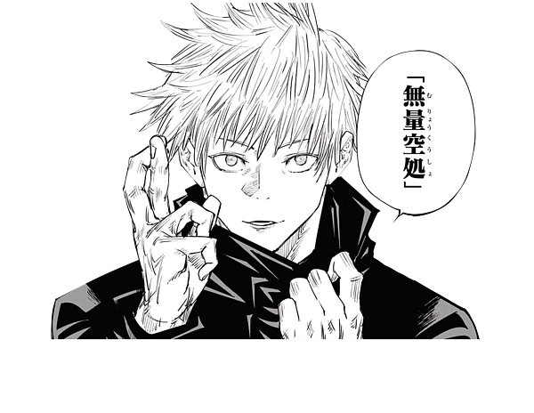
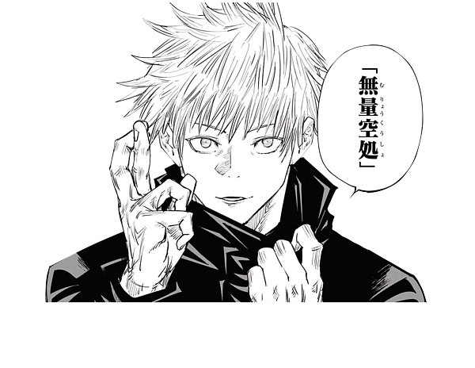

"Throughout Heaven and Earth, I alone am honored,"
"Throughout Heaven and Earth, I alone am honored,"
Satoru Gojo (五ご条じょう悟さとる Gojō Satoru?) is one of the main protagonists of the Jujutsu Kaisen series. He is a special grade jujutsu sorcerer and widely recognized as the strongest in the world. Satoru is the pride of the Gojo Family, the first person to inherit both the Limitless and the Six Eyes in four hundred years.